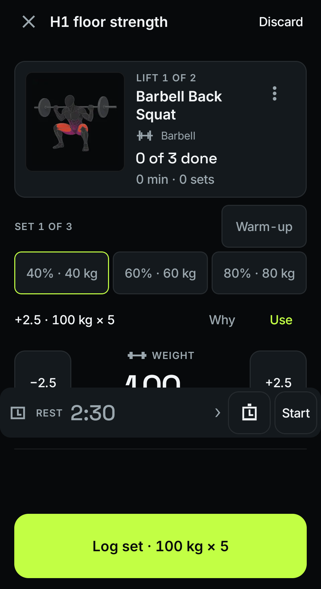
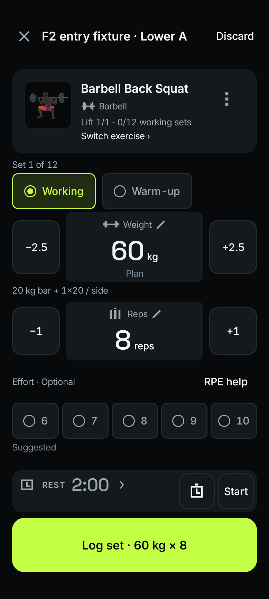
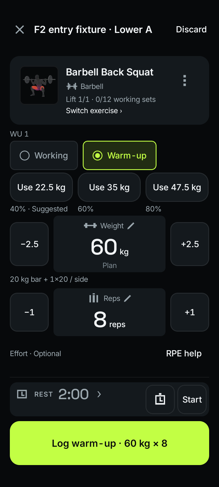
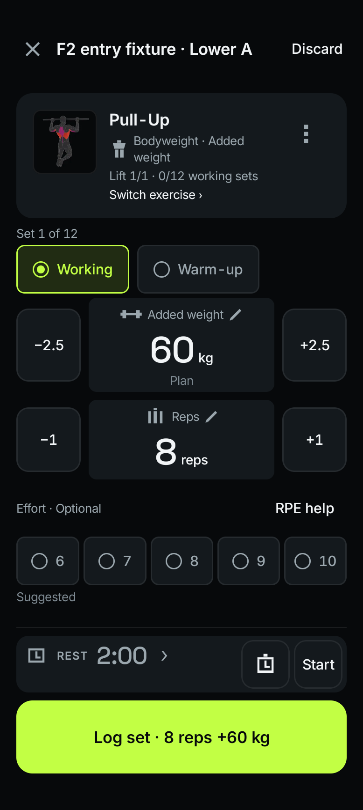
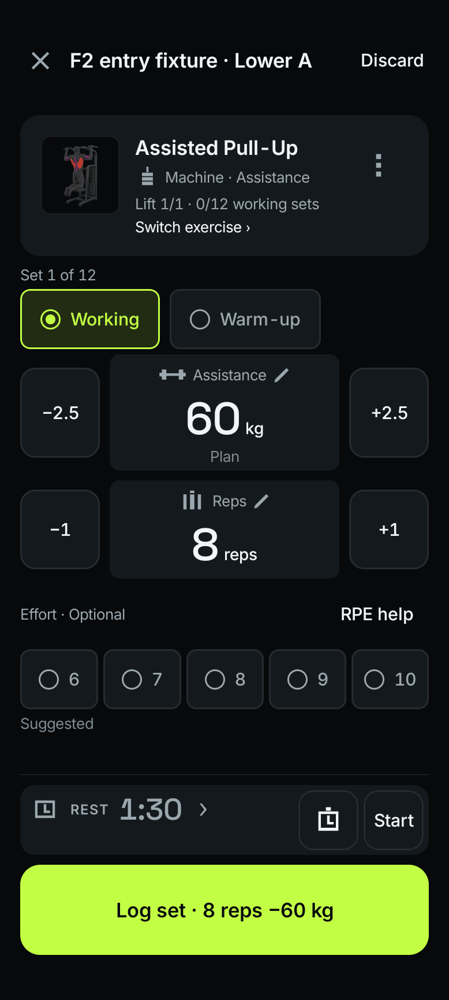
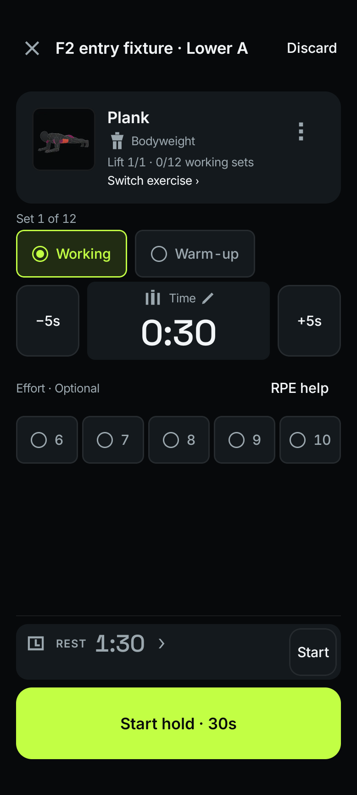
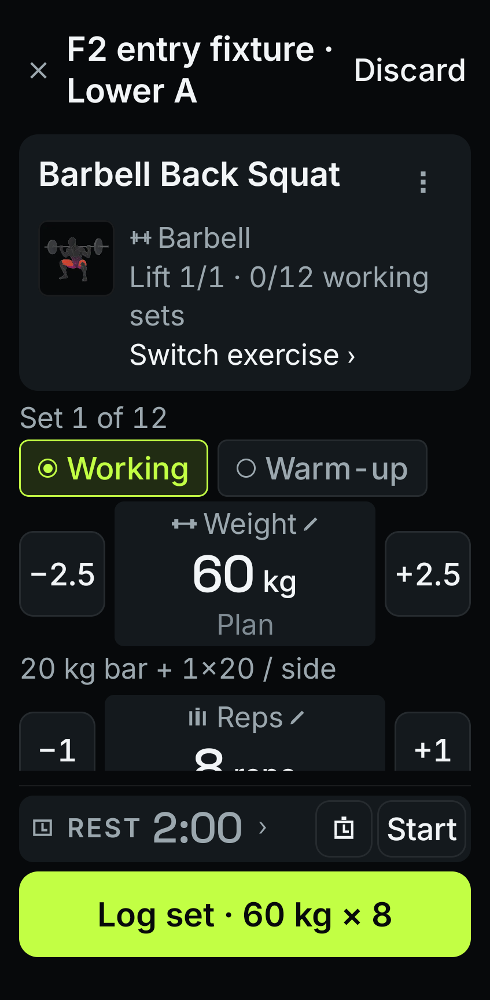
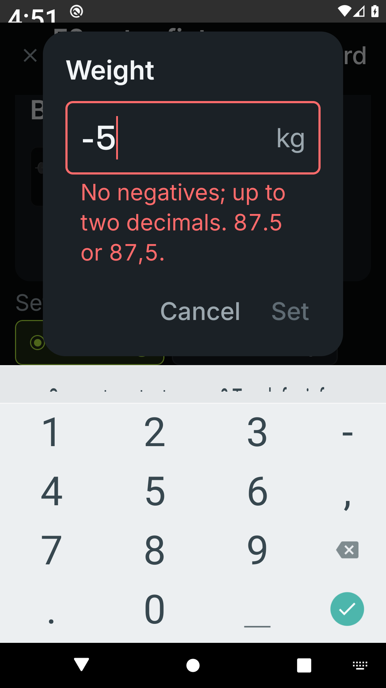
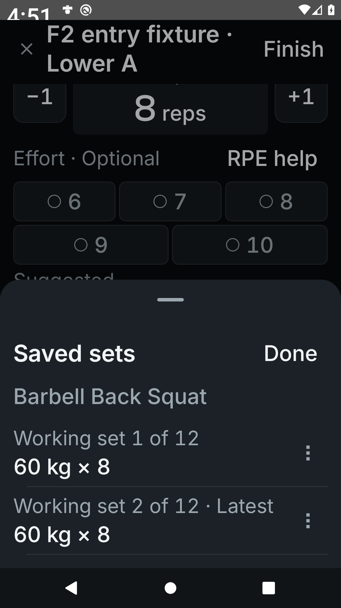
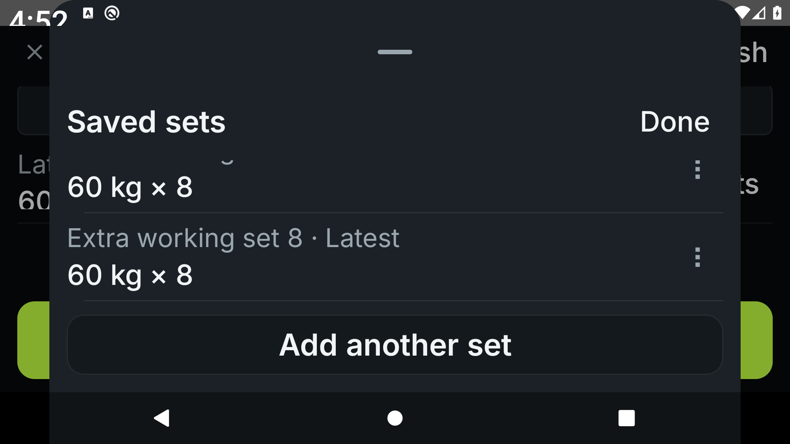

Temper · native redesign · packet 2
Make the next set clear.
Compact exercise identity, visibly editable numbers, explicit working and warm-up modes, and optional effort. Saved sets move into a dedicated list so logging stays in place.
Implementation and verification in progress. These are native Compose renders of synthetic workouts. Packet 3 will complete the Next exercise / Finish contract, timer redesign and retry behavior before the workout phone milestone.
Compare with the native starting point

Before · recorded native baseline. Different fixture data and viewport harness; compare composition, not pixels.

After · reviewed 360 × 800 dp reference.
Working sets and warm-ups
The main values are always editable. Presets say exactly what they apply; they never look selected before use. The footer keeps the commit action anchored while receipts update alongside the saved-set summary.
360 × 800 dp · working set.

360 × 800 dp · warm-up presets apply a draft without saving.
Every load has its own meaning
Bodyweight repetitions, added weight, assistance and timed holds retain their distinct inputs and stored measurements. No barbell starting weight is invented.

Added weight.

Assistance.

Timed hold.
Enlarged text and correction
Long identities get more text width. Numeric entry selects the existing value, validates before applying, and preserves the draft on Cancel. Saved-set identity, rows and extra-set access share one scrolling area.

412 × 840 dp · font scale 2.0. Supporting content scrolls.

Actual Android window · invalid input · system font scale 2.0.

Saved sets · each row has Edit and Delete.
Short landscape with a long exercise name and ten saved sets

Real landscape window · system font scale 2.0 · first and last row actions and Add another set are exercised.
Evidence and remaining work
The verification record separates viewport comparisons, actual Android windows, durable-data journeys, independent reviews and physical-device acceptance. Emulator screenshots do not establish TalkBack usability, phone performance or upgrade safety. Those remain explicit milestone checks.
Read the executed results and outstanding acceptance